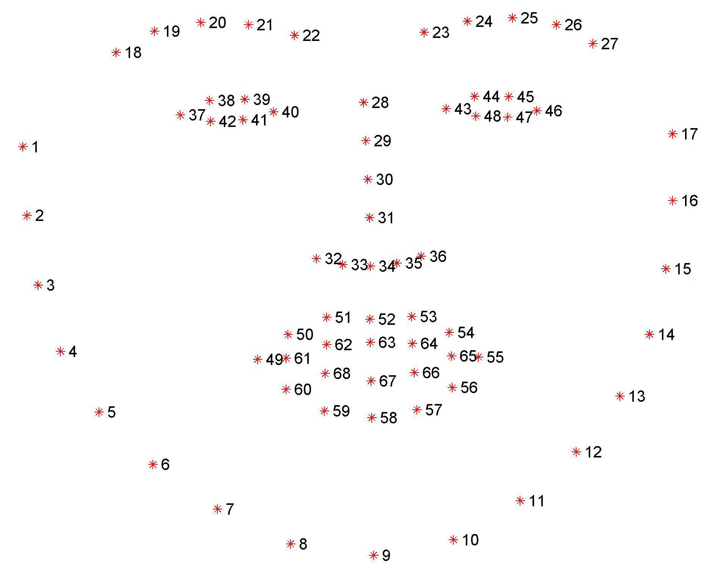
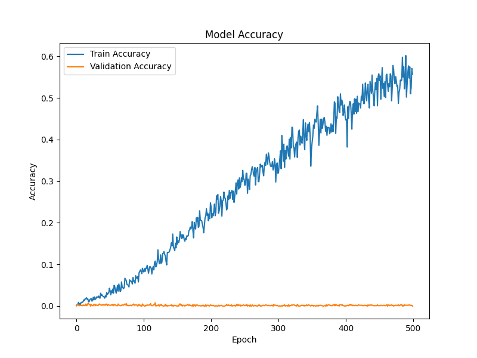
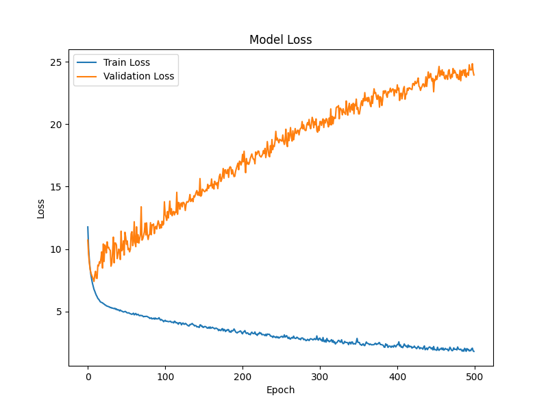

dlib の顔ランドマークを用いた特徴点ベースのリップリーディング（読唇）モデル。無音の映像から唇の動きだけで発話単語を識別し、字幕生成につなげることを目指した卒業研究。
リップリーディング（読唇術）は、唇の動きから発話内容を理解する技術で、聴覚障がい者のコミュニケーション支援や自動字幕生成、バーチャルアバターの口の制御などへの応用が期待される。 本研究は「コンピュータに読唇させる」ことを目的に、音声を使わず視覚情報のみから単語を認識し、字幕生成へつなげることを目指した卒業研究である。
従来の画像ベース手法（CNN系）は高精度な一方で計算コストが高い。本研究では、顔のランドマーク（特徴点）だけを入力とする特徴点ベースのアプローチを採り、低計算コストと汎化を狙った。
Oxford-BBC Lip Reading in the Wild（LRW）データセットを使用。自然な状況下で撮影された500単語・1,000人以上の話者による発話映像（256×256・各29フレーム）を、学習用・検証用・テスト用に分割して用いた。
dlib の shape_predictor_68_face_landmarks で各フレームから68点の顔ランドマークを取得。口元の1点を基準座標（128×128）に固定し、他のランドマークを相対的に配置、さらに鼻の位置を基準にスケーリングして、話者や位置の違いを正規化した。各単語にはラベルを付与（ABOUT→1, ABSOLUTELY→2 …）。
処理後のデータは [フレーム数29]×[ランドマーク数20]×[座標(x,y)2] の時系列テンソルとなる。

口の動きは時間的な変化を伴うため、時系列解析に強い LSTM（Long Short-Term Memory）を採用。入力層（29フレーム×20ランドマーク×座標2）に対して2層のLSTM（64・32ユニット）を重ね、活性化関数に ReLU と Softmax、過学習抑制にドロップアウト（0.5）を適用した。
学習精度は約60%まで上昇した一方で、検証精度は約0.2%に留まり、未知データをほとんど識別できなかった。損失曲線でも、学習損失は減少する一方で検証損失は増加し続け、典型的な過学習が起きていることが分かった。最終的に、字幕として出力できる水準には到達しなかった。


ドロップアウト率の増加やL2正則化、ランドマーク点の見直し（口元のみ／顔全体68点）、スケーリングの有無などを試したが、検証精度の改善は得られなかった。 ランドマーク座標の時系列推移だけでは、発話を識別するための情報が不足していると考えられる。 今後は、特徴点同士の空間的関係をより高次元で扱える GCN（グラフ畳み込みネットワーク）など他のモデルの導入により、精度向上を図りたい。
うまくいかなかった結果ではあるが、課題設定・データ整備・モデル構築・評価・考察までの一連の研究プロセスを自力でやり切ったことが、本研究で得た最大の学びである。